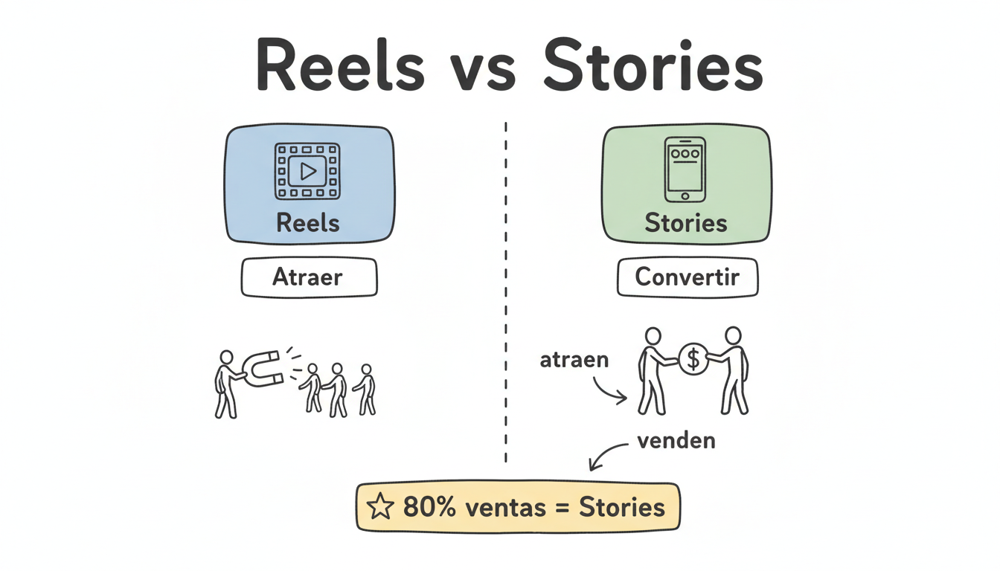
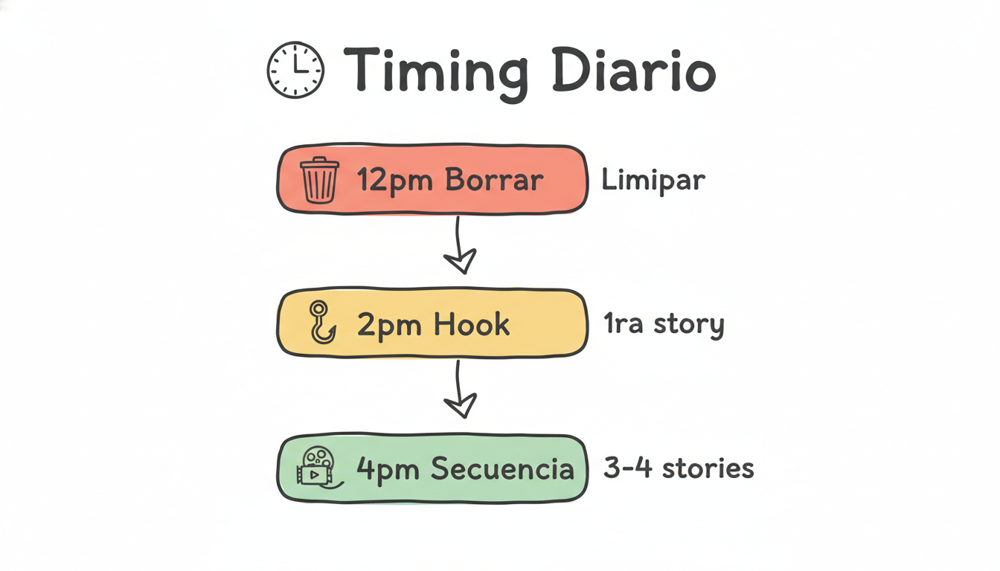
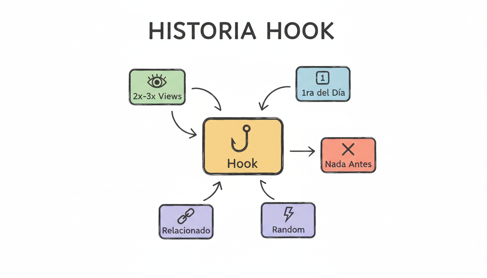
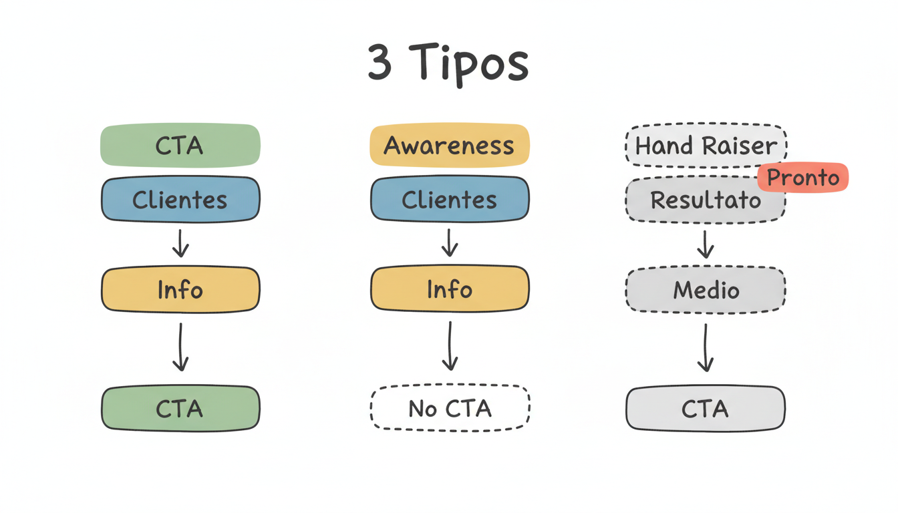
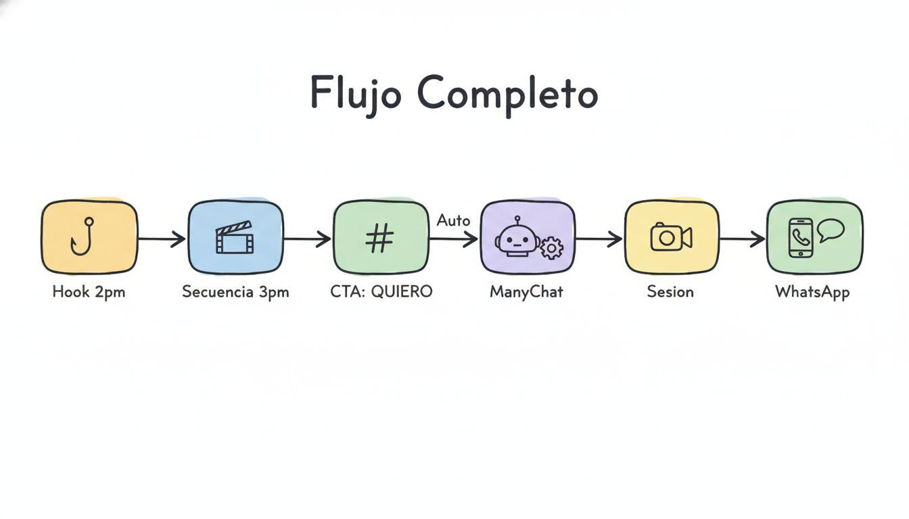

1. El concepto central
Esto es lo mas importante que debes entender

Los Reels atraen gente nueva. Las Stories convierten esa gente en clientes.
Regla #1: Los Reels y los posts son para que gente nueva te descubra. Las historias son para que la gente que ya te sigue te compre. El 80% de las ventas ocurren en las historias, no en los Reels.
Esto significa que tus historias son tu herramienta mas importante para generar ingresos. No son para contenido pulido ni para impresionar — son para mostrarte real, cercana, y guiar a la gente al siguiente paso.
2. Tu rutina diaria de historias
El horario importa mas de lo que crees

Tres momentos del dia: borrar, hook, secuencia.
1
12:00 - 1:00 PM — Borrar historias del dia anterior
Borra todas las historias que quedaron de ayer. No te preocupes, Instagram no te penaliza por borrar historias. Lo importante es que cuando subas tu primera historia del dia, no haya nada antes.
2
2:00 PM — Subir el Hook (la primera historia del dia)
Esta es la historia mas importante. Su unico objetivo es generar vistas e interacciones para que el algoritmo le muestre el resto de tus historias a mas gente. No tiene que ver con negocio ni con productos — es algo casual, gracioso o cotidiano.
3
3:00 - 4:00 PM — Subir la secuencia principal (3-4 historias)
Una hora despues del hook, subes la secuencia principal. Maximo 3-4 historias. Mas de eso y la gente se aburre y pasa al siguiente.
Por que este horario? Si subes muy tarde (8-9pm), la gente te responde de noche, los agarras al dia siguiente y esos leads ya estan frios. Entre 2-4pm es el horario ideal para generar respuestas que puedas atender el mismo dia.
3. La Historia Hook (Gancho)
La primera historia del dia determina el exito de todo lo demas

Un buen hook puede duplicar o triplicar tus vistas del dia.
La primera historia del dia es la mas importante. Si es aburrida, vas a tener pocas vistas todo el dia. Si es buena, puede duplicar o triplicar la cantidad de personas que ven tu secuencia completa.
Reglas del Hook
- Subir sin nada antes — por eso borramos las de ayer
- No tiene que ver con la secuencia — puede ser algo completamente random
- Objetivo: generar vistas — no vender, no educar, solo que la gente vea
- Dejarlo correr 1-2 horas antes de subir la secuencia principal
4 Tecnicas de Hook
Tecnica 1: Open Loop (Bucle Abierto)
Dices algo incompleto que obliga a la gente a seguir viendo.
Ejemplo
"Algo me paso hoy que no le he contado a nadie..." (video a camara, cara de sorpresa — no dices que paso)
Ejemplo
"Acabo de recibir un mensaje que me dejo sin palabras" (foto del celular boca abajo, sin mostrar)
Ejemplo
"Nunca pense que iba a decir esto publicamente pero..." (video cortado justo antes de decir que)
Tecnica 2: Pattern Break (Romper el Patron)
Algo inesperado que rompe el scroll automatico.
Ejemplo
Zoom extremo a un objeto random de tu casa — "Adivina que es esto?" (con sticker de encuesta)
Ejemplo
Foto borrosa a proposito — "La proxima historia se ve mejor, te lo prometo"
Ejemplo
Video empezando en silencio total, 3 segundos, y despues dices algo inesperado
Tecnica 3: Curiosity Gap (Vacio de Curiosidad)
La diferencia entre lo que sabes y lo que quieres saber.
Ejemplo
"3 cosas que deje de hacer y mi vida cambio" (sin decir cuales — eso va en la secuencia)
Ejemplo
"Esto es lo que tomo todas las mananas antes que cualquier cosa" (foto del vaso tapado o de espaldas)
Ejemplo
"Una cosa que aprendi este ano que ojala me hubieran dicho antes"
Tecnica 4: Polarizar (Opinion Fuerte)
Una opinion que genera reaccion — la gente responde, y eso le dice al algoritmo que muestre mas.
Ejemplo
"No todo el mundo esta hecho para emprender. Y esta bien."
Ejemplo
"La gente que dice 'no tengo tiempo' en realidad no tiene prioridades"
Ejemplo
"Dejen de pedirle permiso a todo el mundo para vivir su vida"
Regla de oro: El hook NUNCA cierra el loop en la misma historia. El cierre esta en la historia 2 o 3. Si cierras en la misma historia, la gente no pasa a la siguiente y pierdes las vistas.
4. Los tipos de secuencia
En estas primeras 2 semanas usamos solo CTA y Awareness

Hand Raiser se activa despues cuando tengamos recursos de valor listos.
CTA Directo — Para que te pregunten
Es una secuencia de cosecha. Buscas que la gente te escriba pidiendo informacion.
Estructura: Clientes → Conciencia → CTA
1. Clientes: Mostrar tu trabajo con personas reales. Fotos de calls, chats (con permiso), o hablar de las conversaciones que tuviste.
2. Conciencia: Explicar que haces con esas personas. Como las ayudas, que sistema usas.
3. CTA: "Si quieres saber mas, escribeme [KEYWORD]"
Awareness — Para nutrir y sembrar
Es una secuencia de siembra. No pides nada. Solo generas conexion y cercania.
Estructura: Clientes → Conciencia (sin CTA)
Igual que el CTA Directo pero sin pedir nada al final. Mostrar tu vida real, detras de camaras, momentos con la familia, reflexiones. La gente te va conociendo sin sentirse presionada.
Hand Raiser — Para generar conversaciones (proximamente)
Se activa cuando tengamos recursos gratuitos de valor listos. La estructura es: Resultado → Vehiculo → CTA. Ofreces un recurso irresistible a cambio de que la persona te escriba un keyword.
Un recurso irresistible es: Una herramienta especifica que te permite conseguir un resultado especifico en el menor tiempo posible con el menor esfuerzo posible. No es un video de 5 minutos — es algo tangible y concreto (un checklist, una guia, un template, un test).
5. Tus 3 angulos ganadores
De estos temas hablas — no de cualquier cosa
Un angulo ganador es un tema o punto de dolor que dispara intencion de compra. Cada vez que hablas de eso, la gente te responde, te agenda y te compra. Estos son tus 3 angulos principales:
1
Angulo de Identidad
Tu historia personal de transformacion. Quien eras antes vs quien eres ahora. Cuando tu audiencia se identifica contigo, la objecion de "yo no puedo" se destruye sola.
2
Angulo Anti-Metodo Tradicional
Lo que haces diferente. El metodo que usas que no requiere perseguir a nadie, molestar a familiares, ni hacer cosas incomodas. Te posicionas como la alternativa moderna.
3
Angulo de Prueba / Resultados
Testimonios y resultados reales de personas que trabajan contigo o usan tus productos. No teoria — historias de gente normal con cambios visibles.
Como saber cual angulo funciona mas? Con el sistema de etiquetas de ManyChat. Cada keyword tiene un tag. Despues de 2-3 semanas, revisas cual keyword tiene mas respuestas y cual convierte mas a sesiones. Ese angulo se prioriza.
6. Calendario semanal
Semanas 1 y 2 — Solo CTA + Awareness
| Lun |
CTA |
Angulo Anti-Metodo Tradicional |
| Mar |
AWR |
Vida real |
| Mie |
CTA |
Angulo de Identidad |
| Jue |
AWR |
Detras de camaras |
| Vie |
CTA |
Angulo de Prueba / Resultados |
| Sab |
AWR |
Familia / reflexion |
| Dom |
AWR |
Descanso / vida normal |
3 CTA + 4 Awareness por semana. Los CTA siempre terminan con un keyword de ManyChat. Los Awareness nunca piden nada.
7. Ejemplos completos por dia
Copia estas secuencias y adaptalas a tu semana
Lunes — CTA (Anti-Metodo Tradicional)
Secuencia completa
2:00 PM — Hook
Video casual — llegando a algun lugar, haciendo algo cotidiano. Nada de negocio.
3-4 PM — Historia 2: Clientes
"Esta semana hable con 3 personas que me escribieron por Instagram preguntandome como hago lo que hago. Yo no les escribi a ellas — ellas me buscaron."
Historia 3: Conciencia
"No mando mensajes frios. No persigo a nadie. Tengo un metodo simple donde la gente me encuentra y me escribe. Desde mi celular, desde mi casa."
Historia 4: CTA
"Si quieres saber como funciona, escribeme
[KEYWORD] y te cuento en 15 minutos. Sin compromiso."
Martes — Awareness (Vida real)
Secuencia completa
2:00 PM — Hook
Algo gracioso o cotidiano — preparando desayuno, algo con los ninos.
3-4 PM — Historia 2: Mostrar
Momento real de tu dia — trabajando desde tu casa, organizando tu semana, algo normal.
Historia 3: Reflexion
"Todavia me cuesta creer que puedo trabajar desde mi casa en algo que me gusta. No siempre fue asi."
Miercoles — CTA (Identidad)
Secuencia completa
2:00 PM — Hook
Encuesta divertida: "Cafe o te por la manana?" (sticker encuesta)
3-4 PM — Historia 2: Clientes
"Les presento a [nombre]. Nunca habia hecho nada parecido. Hace 2 meses empezo conmigo y ya genero su primer ingreso." (foto o screenshot con permiso)
Historia 3: Conciencia
"Lo que hago: ayudo a personas normales a generar ingresos extra desde su casa con un sistema sencillo. Sin experiencia previa. Sin tener que exponerse. Sin perseguir a nadie."
Historia 4: CTA
"Si te interesa saber si esto es para ti, escribeme
[KEYWORD]. Hablamos 15 minutos y si no es para ti, todo bien."
Jueves — Awareness (Detras de camaras)
Secuencia completa
2:00 PM — Hook
Algo cotidiano — en el carro, llegando a algun lado, algo espontaneo.
3-4 PM — Historia 2: Mostrar
En un evento, en una llamada con tu equipo, preparando contenido. El proceso real, sin filtros.
Historia 3: Reflexion
"Esto es lo que se ve detras. No es glamoroso, no es perfecto. Pero es real y es mio."
Viernes — CTA (Resultados / Prueba)
Secuencia completa
2:00 PM — Hook
Viernes — algo de celebracion, mood de fin de semana.
3-4 PM — Historia 2: Clientes
Testimonio real de un cliente o persona de tu equipo. Un resultado concreto, visible, con nombre (con permiso).
Historia 3: Conciencia
Explicar brevemente como se logro ese resultado. Que hicieron, que sistema usaron, por que funciono.
Historia 4: CTA
"Si quieres saber como funciona esto, escribeme
[KEYWORD] y te oriento."
Sabado — Awareness (Familia)
Secuencia completa
2:00 PM — Hook
Fin de semana en familia — algo tierno o gracioso.
3-4 PM — Historia 2: Mostrar
Momento con la familia, disfrutando el sabado.
Historia 3: Reflexion
"Antes trabajaba para tener tiempo libre. Ahora trabajo en mi tiempo libre porque me gusta lo que hago."
Domingo — Awareness (Descanso)
Secuencia completa
2:00 PM — Hook
Domingo tranquilo — iglesia, cocina, descanso.
3-4 PM — Historia 2: Mostrar
Algo personal y humano. Sin negocio.
Historia 3: Reflexion
"Construir algo propio no es facil. Pero la libertad de decidir como paso mi domingo con mi familia no tiene precio."
8. Semana 2 — Variaciones
Misma estructura, diferente contenido
La semana 2 sigue el mismo calendario exacto. Lo que cambia es el contenido de cada historia:
Lunes CTA — Anti-Metodo (variacion)
Diferente historia de alguien que te escribio. Mostrar el chat (borrando nombre). "Miren lo que me escribieron ayer. Yo no busque a esta persona."
Miercoles CTA — Identidad (variacion)
Tu propia historia: "Yo era [como eras antes]. Me daba miedo [que te daba miedo]. Hoy genero ingresos hablando con gente que me busca."
Viernes CTA — Resultados (variacion)
Diferente testimonio. Otro caso real. Diferente resultado concreto.
Rota las tecnicas de hook: Si la semana 1 usaste Open Loop el lunes, la semana 2 usa Curiosity Gap. Asi la audiencia no se acostumbra a un solo patron.
9. El flujo completo
Desde la historia hasta la venta

Hook → Secuencia → Keyword → ManyChat → Sesion → Cierre
Asi funciona el sistema completo:
- 2pm: Subes el hook — genera vistas
- 3-4pm: Subes la secuencia (3-4 historias)
- CTA: La ultima historia invita a escribir un keyword
- ManyChat: Responde automaticamente, califica al prospecto
- Sesion: Si quiere saber mas, agenda una sesion de 15 min
- Cierre: Tu cierras la conversacion personalmente por WhatsApp o llamada
10. Que medir cada semana
Estos numeros te dicen si vas bien
10-40%
de tus seguidores deben ver tus historias
1-2%
tasa de respuesta en CTA
3-5
sesiones agendadas por semana
Al final de la semana 2, revisa:
- Cuantas vistas promedio tengo por historia?
- Cuantas respuestas genero cada CTA?
- Que keyword respondieron mas?
- Que hook tuvo mas vistas?
- Cuantas sesiones se agendaron?
Con estos datos decidimos: que angulo priorizar, que tipo de hook repetir, y si ya podemos crear el primer recurso gratuito (Hand Raiser) para las semanas 3-4.
11. Reglas rapidas
Tenlas siempre presentes
- Maximo 3-4 historias por dia
- Siempre borrar las de ayer antes de subir
- Hook a las 2pm, secuencia a las 3-4pm
- El hook nunca es de negocio — es casual y cotidiano
- Poco texto en pantalla — si necesitas explicar, habla a camara
- Fotos y videos casuales — nada pulido, todo desde el celular
- Responder TODOS los DMs que lleguen
- Los CTA siempre terminan en keyword
- Los Awareness nunca piden nada
- No subir mas de 4-5 historias en un dia
12. Errores que matan tus historias
Evita estos a toda costa
✕
Mucho texto en pantalla
La gente no lee parrafos en historias. Usa fotos, videos cortos, y si necesitas explicar algo, habla a camara.
✕
Historias sin coherencia
No saltes de un tema a otro. Cada dia tiene un angulo especifico — respetalo.
✕
No responder DMs
Si alguien te escribe y no respondes, Instagram mata tu engagement. Responde siempre.
✕
Subir 10+ historias seguidas
La gente se aburre y pasa al siguiente. Maximo 4-5.
✕
Mal audio o mala calidad
No tiene que ser perfecto, pero se tiene que ver y escuchar bien. Sin eco, sin musica fuerte.